Papers

|
RoboCasa: Large-Scale Simulation of Everyday Tasks for Generalist Robots
Soroush Nasiriany, Abhiram Maddukuri*, Lance Zhang*, Adeet Parikh, Aaron Lo, Abhishek Joshi, Ajay Mandlekar, Yuke Zhu
Robotics: Science and Systems (RSS), 2024
|
| 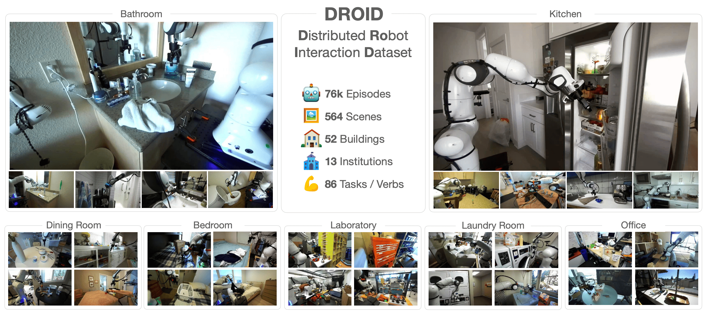 |
DROID: A Large-Scale In-The-Wild Robot Manipulation Dataset
Alexander Khazatsky, Karl Pertsch, Suraj Nair, Ashwin Balakrishna, Sudeep Dasari, Siddharth Karamcheti, Soroush Nasiriany, ..., Yuke Zhu, Thomas Kollar, Sergey Levine, Chelsea Finn
Robotics: Science and Systems (RSS), 2024
|
| 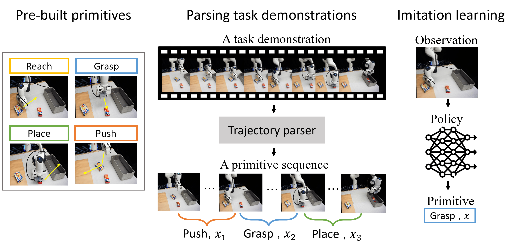 |
PRIME: Scaffolding Manipulation Tasks with Behavior Primitives for Data-Efficient Imitation Learning
Tian Gao, Soroush Nasiriany, Huihan Liu, Quantao Yang, Yuke Zhu
IEEE Robotics and Automation Letters (RA-L), 2024
|
| 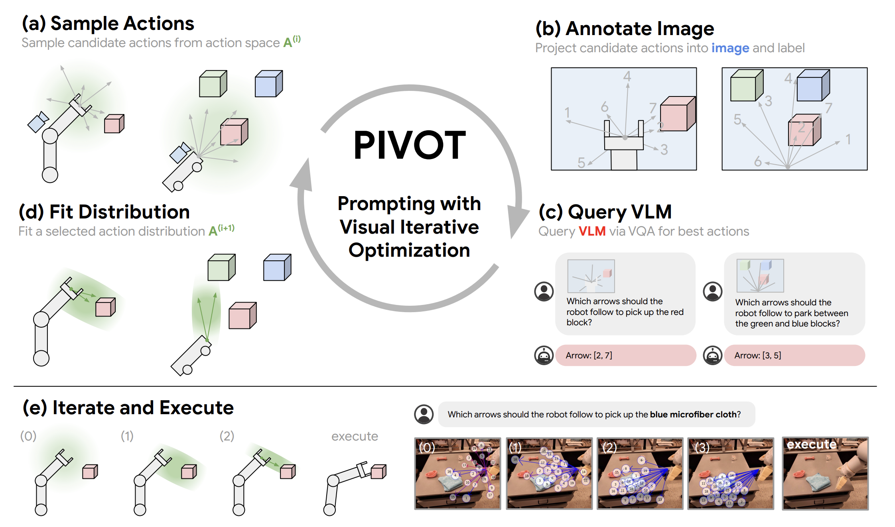 |
PIVOT: Iterative Visual Prompting Elicits Actionable Knowledge for VLMs
Soroush Nasiriany*, Fei Xia*, Wenhao Yu*, Ted Xiao*, Jacky Liang, Ishita Dasgupta, Annie Xie, Danny Driess, Ayzaan Wahid, Zhuo Xu, Quan Vuong, Tingnan Zhang, Tsang-Wei Edward Lee, Kuang-Huei Lee, Peng Xu, Sean Kirmani, Yuke Zhu, Andy Zeng, Karol Hausman, Nicolas Heess, Chelsea Finn, Sergey Levine, Brian Ichter*
International Conference on Machine Learning (ICML), 2024
|

|
Open X-Embodiment: Robotic Learning Datasets and RT-X Models
Open X-Embodiment Collaboration
IEEE International Conference on Robotics and Automation (ICRA), 2024
|
| 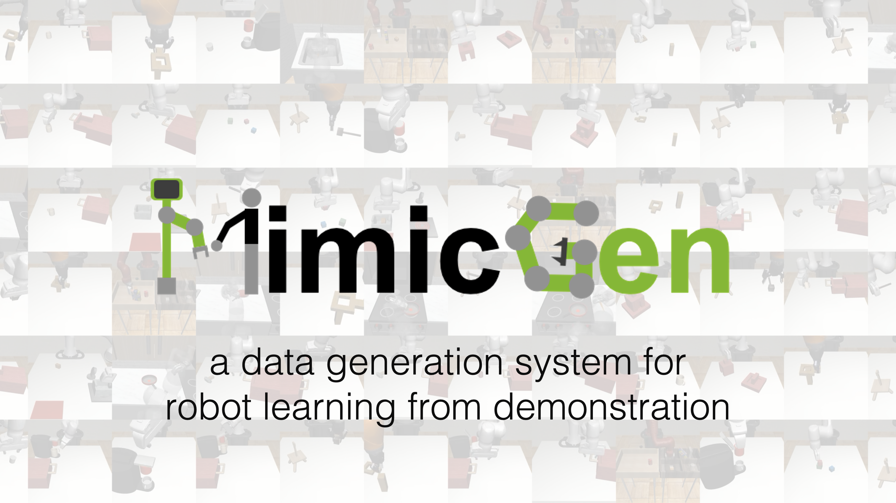 |
MimicGen: A Data Generation System for Scalable Robot Learning using Human Demonstrations
Ajay Mandlekar, Soroush Nasiriany*, Bowen Wen*, Iretiayo Akinola, Yashraj Narang, Linxi Fan, Yuke Zhu, Dieter Fox
Conference on Robot Learning (CoRL), 2023
|
| 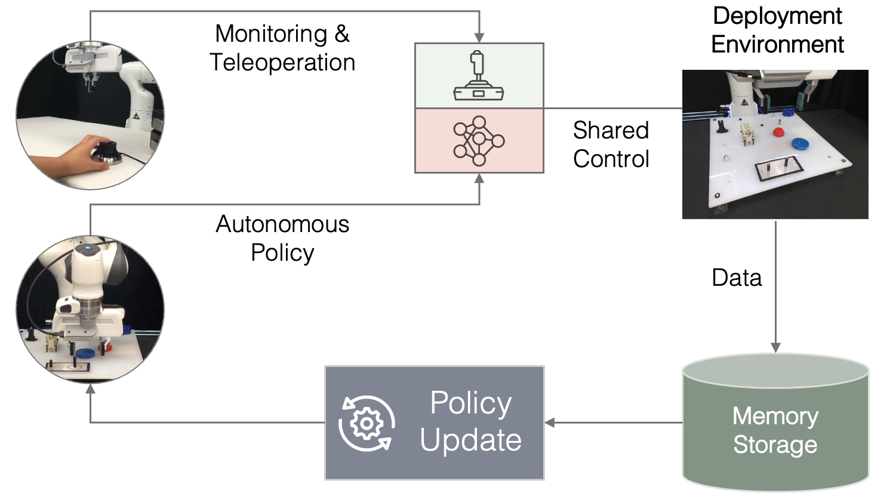 |
Robot Learning on the Job: Human-in-the-Loop Manipulation and Learning During Deployment
Huihan Liu, Soroush Nasiriany, Lance Zhang, Zhiyao Bao, Yuke Zhu
Robotics: Science and Systems (RSS), 2023
Best Paper Award Finalist
|
| 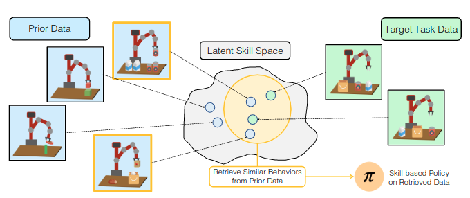 |
Learning and Retrieval from Prior Data for Skill-based Imitation Learning
Soroush Nasiriany, Tian Gao, Ajay Mandlekar, Yuke Zhu
Conference on Robot Learning (CoRL), 2022
|
| 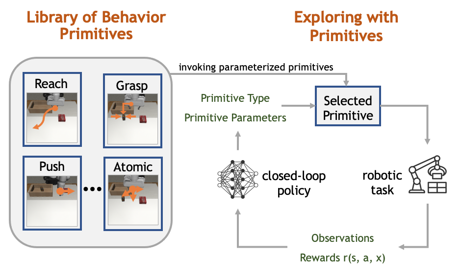 |
Augmenting Reinforcement Learning with Behavior Primitives for Diverse Manipulation Tasks
Soroush Nasiriany, Huihan Liu, Yuke Zhu
IEEE International Conference on Robotics and Automation (ICRA), 2022
Outstanding Learning Paper
|
| 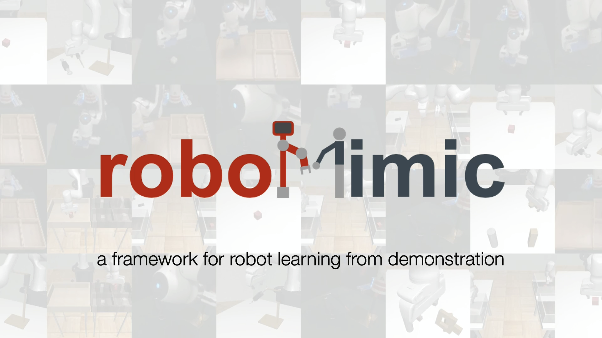 |
What Matters in Learning from Offline Human Demonstrations for Robot Manipulation
Ajay Mandlekar, Danfei Xu, Josiah Wong, Soroush Nasiriany, Chen Wang, Rohun Kulkarni, Li Fei-Fei, Silvio Savarese, Yuke Zhu, Roberto Martín-Martín
Conference on Robot Learning (CoRL), 2021
Oral Presentation
|
| 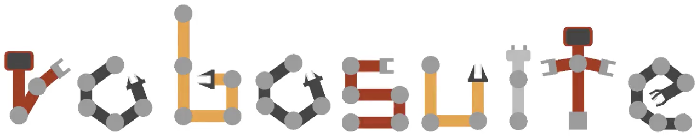 |
robosuite: A Modular Simulation Framework and Benchmark for Robot Learning
Yuke Zhu, Josiah Wong, Ajay Mandlekar, Roberto Mart ́ın-Mart ́ın, Abhishek Joshi, Soroush Nasiriany, Yifeng Zhu
Technical report, 2020
|
| 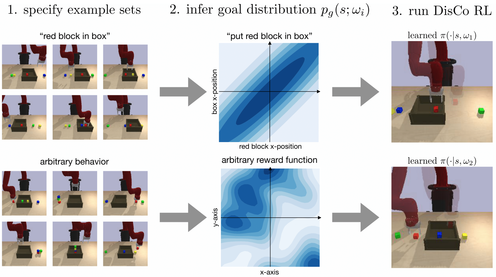 |
DisCo RL: Distribution-Conditioned Reinforcement Learning for General-Purpose Policies
Soroush Nasiriany*, Vitchyr H. Pong*, Ashvin Nair*, Alexander Khazatsky, Glen Berseth, Sergey Levine
IEEE International Conference on Robotics and Automation (ICRA), 2021
|
| 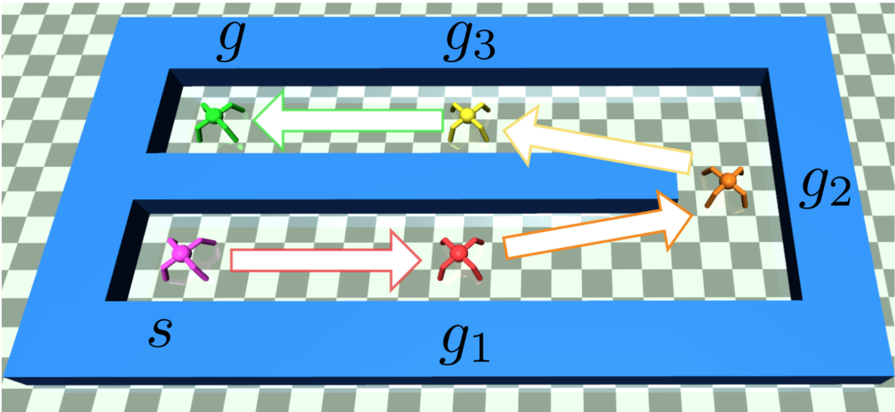 |
Planning with Goal-Conditioned Policies
Soroush Nasiriany*, Vitchyr H. Pong*, Steven Lin, Sergey Levine
Advances in Neural Information Processing Systems, 2019
|